50 simulated missions · floor 1, 285 Jay St
Fire rescue / police persona: the wearer is somewhere on floor 1, takes one photo, and is routed to a random target. App · 3D floor
| Missions that reached the destination | 48 / 50 |
| …with every first move the same as from the true pose | 44 / 50 |
| Photo fixes (legs) | 67 |
| First photo matched | 49 / 68 |
| Matched within 3 photos | 67 / 68 |
| Wrong-place fixes (more than 6 m off) | 0 |
| Fix on the exact station / one station over (5 m) | 64 / 3 |
| Heading error: median / 90th pct / worst | 4° / 10° / 37° |
| Match time (desktop Chrome): median / worst | 2.5 s / 3.0 s |
| Confidence shown: high / medium / low | 55 / 12 / 0 |
How a run works. A random start station and target. The wearer looks in a random direction: that survey photo is taken out of the pack, then cropped, shifted, tilted, re-exposed, blurred, noised and re-compressed to stand in for another camera, and sent through the real phone page and the real glasses page in headless Chrome. No match means look another way (up to 3 photos). If the route leaves the plan through a door, the next photo is taken on the other side. Each picture is the scene with the glasses' floor schematic on top.
What this does not prove. The test photos come from the survey phone, on the survey evening, from the survey spots. A photo from the glasses camera, from a spot between stations, in smoke or in the dark, has not been tried. tools/bench_missions.py, seed 2027.
#1 · Information desk / turnstiles → A 106 PASS

Leg 1 · at S2 Information desk / turnstiles · 1 photo(s) with no match first
Fix: 0 m off, heading -1°, 19 points, confidence medium, 2662 ms
Route (39 m): LEFT 5 m → BEAR RIGHT 23 m → LEFT 11 m
First move matches the true pose.
#2 · A 105 south-east corner (south door) → Information desk PASS
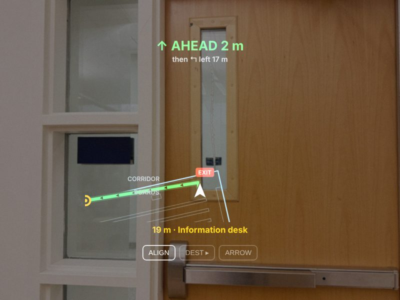
Leg 1 · at S9 A 105 south-east corner (south door)
Fix: 0 m off, heading +3°, 26 points, confidence high, 915 ms
Route (19 m): AHEAD 2 m → LEFT 17 m → THROUGH DOOR A 105 (NORTH), THEN SHOOT AGAIN
First move matches the true pose.

Leg 2 · at S5 Corridor outside A 105
Fix: 0 m off, heading +4°, 32 points, confidence high, 524 ms
Route (19 m): BEAR LEFT 11 m → BEAR LEFT 5 m → BEAR RIGHT 2 m
First move matches the true pose.
#3 · Information desk / turnstiles → South cabinets PASS
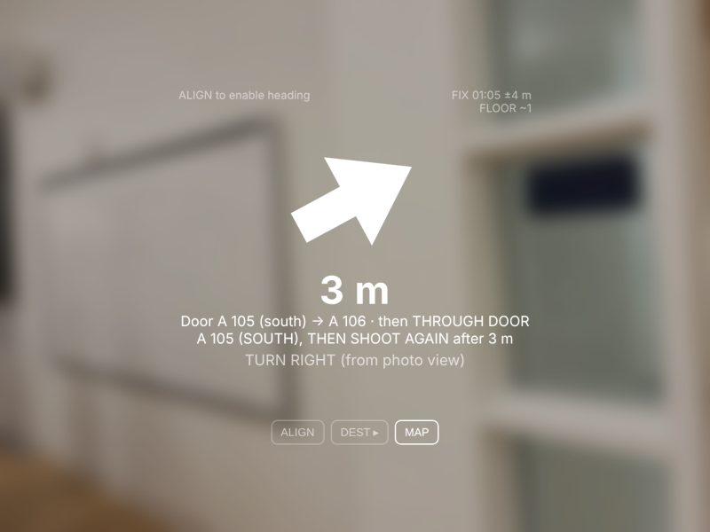
Leg 1 · at S2 Information desk / turnstiles · 1 photo(s) with no match first
Fix: 0 m off, heading +20°, 60 points, confidence high, 2952 ms
Route (39 m): RIGHT 5 m → BEAR RIGHT 31 m → RIGHT 2 m → THROUGH DOOR A 105 (SOUTH), THEN SHOOT AGAIN
First move matches the true pose.
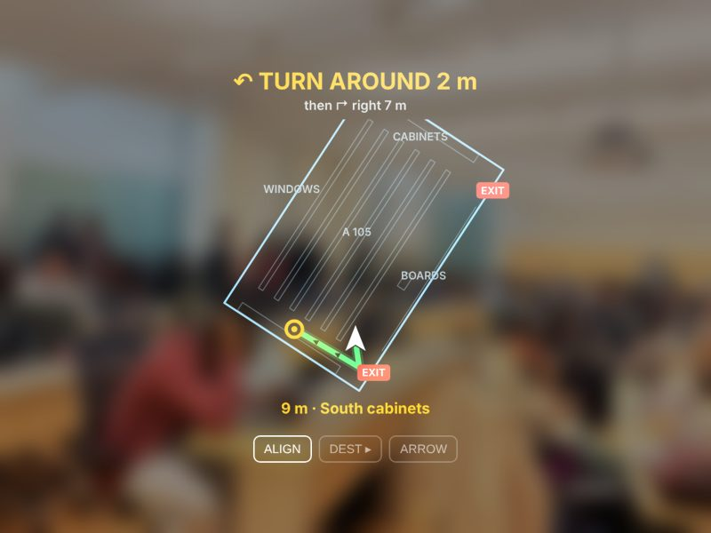
Leg 2 · at S9 A 105 south-east corner (south door)
Fix: 0 m off, heading -6°, 26 points, confidence high, 2673 ms
Route (9 m): TURN AROUND 2 m → RIGHT 7 m
First move matches the true pose.
#4 · A 105 north-west corner (windows) → A 106 PASS

Leg 1 · at S7 A 105 north-west corner (windows)
Fix: 0 m off, heading -17°, 23 points, confidence medium, 2823 ms
Route (13 m): AHEAD 13 m → THROUGH DOOR A 105 (NORTH), THEN SHOOT AGAIN
First move matches the true pose.
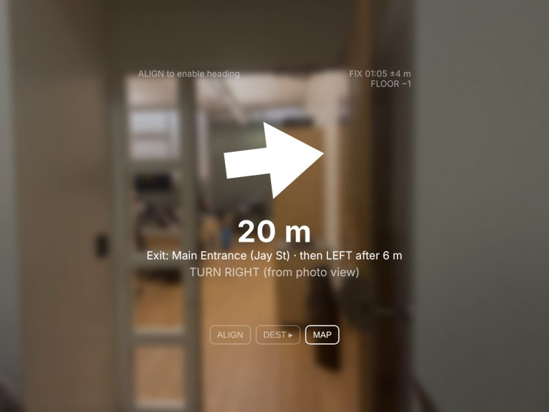
Leg 2 · at S5 Corridor outside A 105
Fix: 0 m off, heading -4°, 41 points, confidence high, 1639 ms
Route (23 m): BEAR LEFT 12 m → LEFT 11 m
First move matches the true pose.
#5 · A 105 north-west corner (windows) → Exit Stair E (by corridor doors) PASS
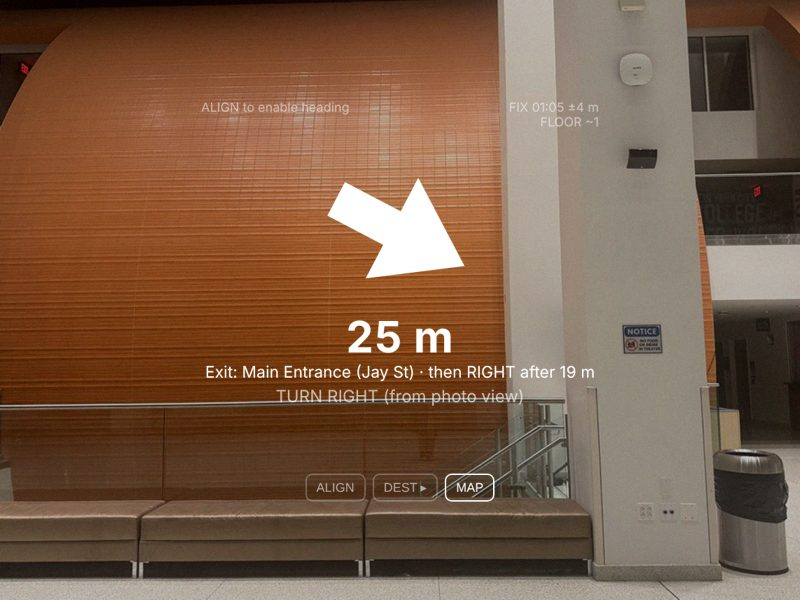
Leg 1 · at S7 A 105 north-west corner (windows)
Fix: 0 m off, heading +4°, 38 points, confidence high, 2380 ms
Route (13 m): LEFT 13 m → THROUGH DOOR A 105 (NORTH), THEN SHOOT AGAIN
First move matches the true pose.
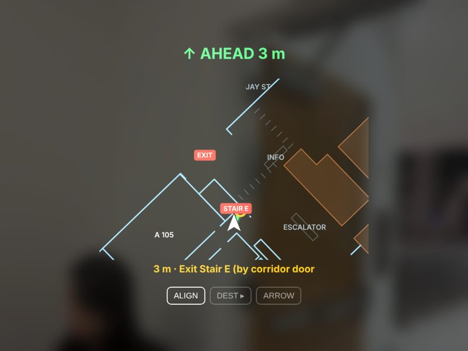
Leg 2 · at S5 Corridor outside A 105 · 1 photo(s) with no match first
Fix: 0 m off, heading -2°, 61 points, confidence high, 1717 ms
Route (3 m): AHEAD 3 m
First move matches the true pose.
#6 · Corridor outside A 105 → Courtyard doors PASS
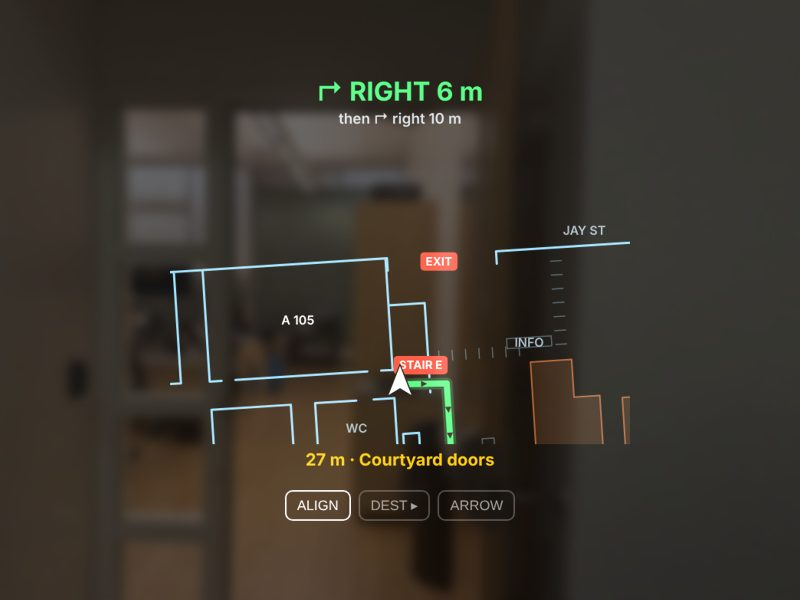
Leg 1 · at S5 Corridor outside A 105
Fix: 0 m off, heading +0°, 60 points, confidence high, 2596 ms
Route (27 m): RIGHT 6 m → RIGHT 10 m → AHEAD 12 m
First move matches the true pose.
#7 · Corridor doors / Exit Stair E → Escalator to 2nd floor PASS

Leg 1 · at S4 Corridor doors / Exit Stair E
Fix: 0 m off, heading -2°, 128 points, confidence high, 2614 ms
Route (14 m): BEAR RIGHT 9 m → LEFT 5 m
First move matches the true pose.
#8 · A 105 south-west corner (windows) → Windows (Jay St side) REACHED, a first move was off

Leg 1 · at S8 A 105 south-west corner (windows) · 2 photo(s) with no match first
Fix: 0 m off, heading -5°, 116 points, confidence high, 2747 ms
Route (10 m): BEAR LEFT 10 m
First move: BEAR LEFT. From the true pose it would be: LEFT.
#9 · Corridor doors / Exit Stair E → Theater (orchestra) PASS

Leg 1 · at S4 Corridor doors / Exit Stair E
Fix: 0 m off, heading -0°, 113 points, confidence high, 2917 ms
Route (68 m): BEAR LEFT 9 m → RIGHT 34 m → RIGHT 25 m
First move matches the true pose.
#10 · Behind the escalators / Elevator Bank B → Theater (orchestra) PASS
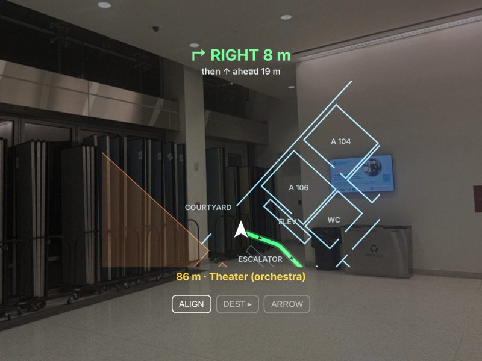
Leg 1 · at S3 Behind the escalators / Elevator Bank B
Fix: 0 m off, heading -5°, 37 points, confidence high, 2265 ms
Route (86 m): RIGHT 8 m → AHEAD 19 m → RIGHT 34 m → RIGHT 25 m
First move matches the true pose.
#11 · Behind the escalators / Elevator Bank B → Escalator to 2nd floor PASS
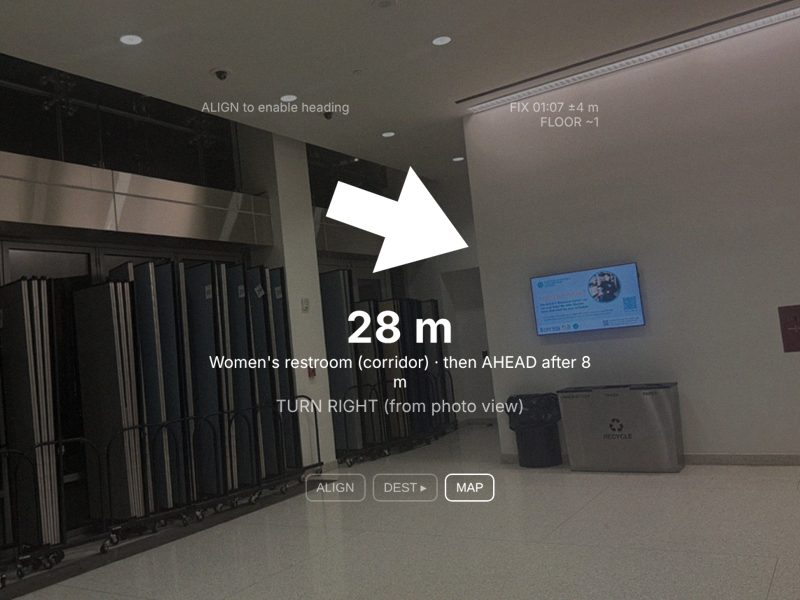
Leg 1 · at S3 Behind the escalators / Elevator Bank B · 1 photo(s) with no match first
Fix: 0 m off, heading +5°, 15 points, confidence medium, 817 ms
Route (12 m): RIGHT 7 m → RIGHT 5 m
First move matches the true pose.
#12 · Atrium (Jay St glass, theater shell) → Elevator Bank B PASS
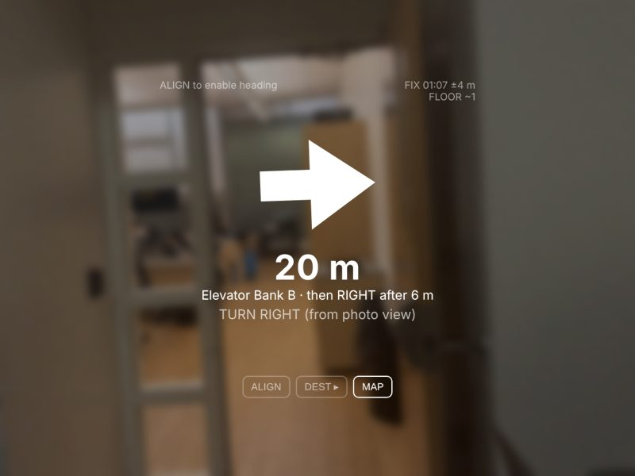
Leg 1 · at S1 Atrium (Jay St glass, theater shell)
Fix: 0 m off, heading +5°, 81 points, confidence high, 2894 ms
Route (42 m): BEAR LEFT 19 m → LEFT 19 m → RIGHT 5 m
First move matches the true pose.
#13 · A 105 north-west corner (windows) → Women's restroom (corridor) REACHED, a first move was off
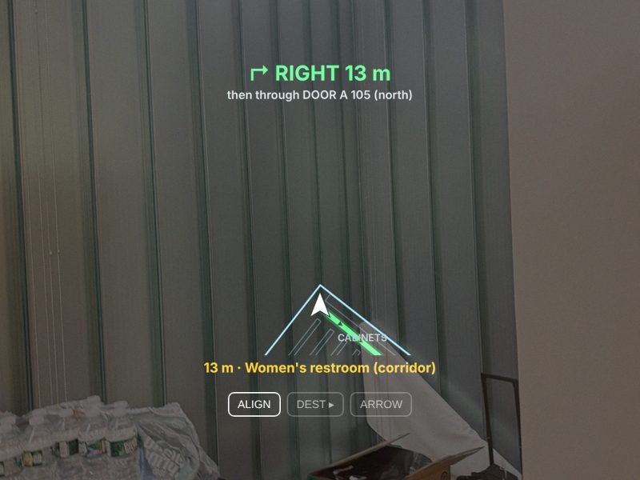
Leg 1 · at S7 A 105 north-west corner (windows)
Fix: 0 m off, heading +30°, 17 points, confidence medium, 823 ms
Route (13 m): RIGHT 13 m → THROUGH DOOR A 105 (NORTH), THEN SHOOT AGAIN
First move: RIGHT. From the true pose it would be: TURN AROUND.
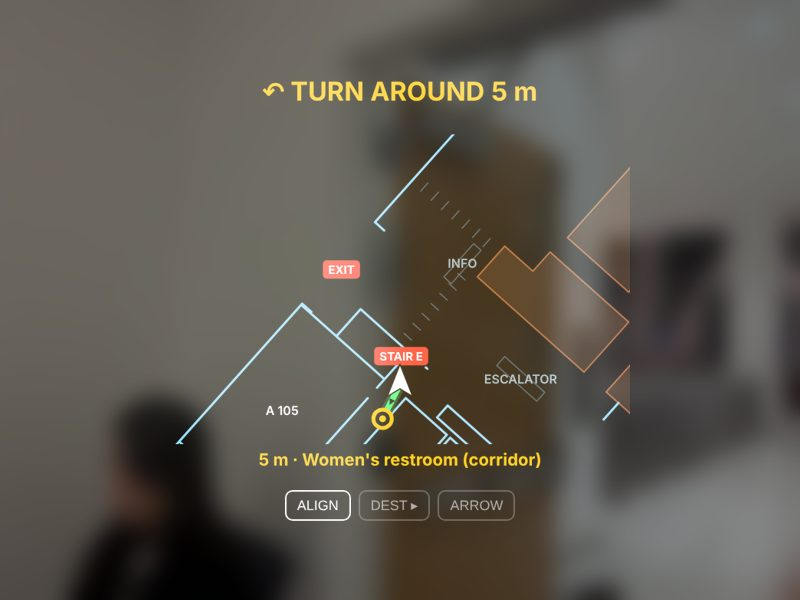
Leg 2 · at S5 Corridor outside A 105 · 1 photo(s) with no match first
Fix: 0 m off, heading -1°, 100 points, confidence high, 2630 ms
Route (5 m): TURN AROUND 5 m
First move matches the true pose.
#14 · Atrium (Jay St glass, theater shell) → Escalator to 2nd floor PASS

Leg 1 · at S1 Atrium (Jay St glass, theater shell)
Fix: 0 m off, heading -6°, 112 points, confidence high, 2545 ms
Route (42 m): LEFT 5 m → AHEAD 15 m → LEFT 17 m → LEFT 5 m
First move matches the true pose.
#15 · Atrium (Jay St glass, theater shell) → Elevator Bank B PASS

Leg 1 · at S1 Atrium (Jay St glass, theater shell)
Fix: 0 m off, heading +1°, 94 points, confidence high, 2589 ms
Route (42 m): RIGHT 19 m → LEFT 19 m → RIGHT 5 m
First move matches the true pose.
#16 · Atrium (Jay St glass, theater shell) → A 103 PASS

Leg 1 · at S1 Atrium (Jay St glass, theater shell)
Fix: 0 m off, heading +1°, 96 points, confidence high, 2398 ms
Route (65 m): TURN AROUND 19 m → LEFT 9 m → RIGHT 33 m → RIGHT 4 m
First move matches the true pose.
#17 · A 105 south-east corner (south door) → Information desk PASS
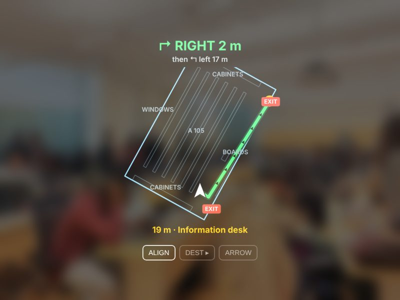
Leg 1 · at S9 A 105 south-east corner (south door)
Fix: 0 m off, heading -5°, 39 points, confidence high, 2641 ms
Route (19 m): RIGHT 2 m → LEFT 17 m → THROUGH DOOR A 105 (NORTH), THEN SHOOT AGAIN
First move matches the true pose.
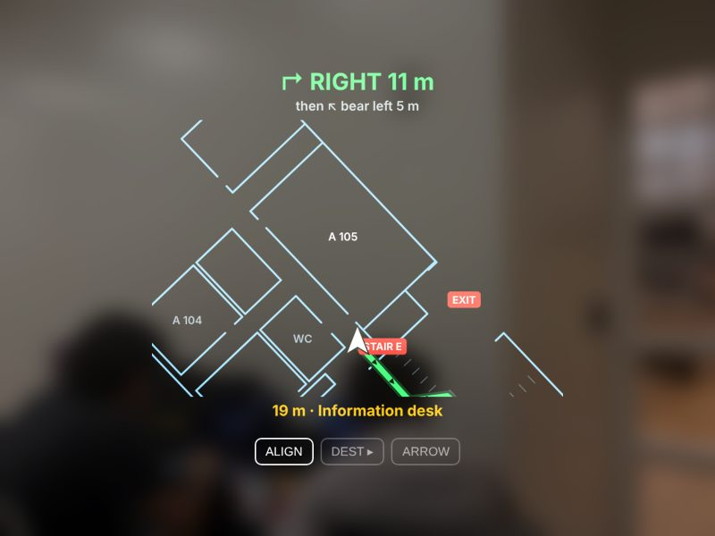
Leg 2 · at S5 Corridor outside A 105 · 2 photo(s) with no match first
Fix: 0 m off, heading -1°, 40 points, confidence high, 1962 ms
Route (19 m): RIGHT 11 m → BEAR LEFT 5 m → BEAR RIGHT 2 m
First move matches the true pose.
#18 · Atrium (Jay St glass, theater shell) → Courtyard doors PASS

Leg 1 · at S1 Atrium (Jay St glass, theater shell)
Fix: 0 m off, heading +2°, 88 points, confidence high, 2466 ms
Route (50 m): TURN AROUND 5 m → AHEAD 15 m → LEFT 18 m → AHEAD 12 m
First move matches the true pose.
#19 · Corridor outside A 105 → Escalator to 2nd floor PASS
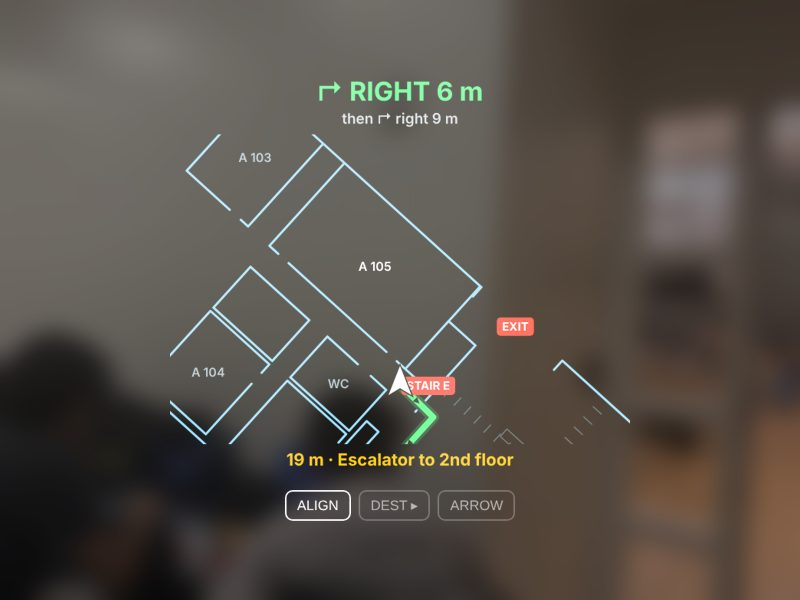
Leg 1 · at S5 Corridor outside A 105 · 2 photo(s) with no match first
Fix: 0 m off, heading -4°, 51 points, confidence high, 2358 ms
Route (19 m): RIGHT 6 m → RIGHT 9 m → LEFT 5 m
First move matches the true pose.
#20 · Corridor outside A 105 → Escalator to 2nd floor PASS

Leg 1 · at S5 Corridor outside A 105 · 1 photo(s) with no match first
Fix: 0 m off, heading +10°, 61 points, confidence high, 2625 ms
Route (19 m): RIGHT 6 m → RIGHT 9 m → LEFT 5 m
First move matches the true pose.
#21 · A 105 south-east corner (south door) → Courtyard doors PASS
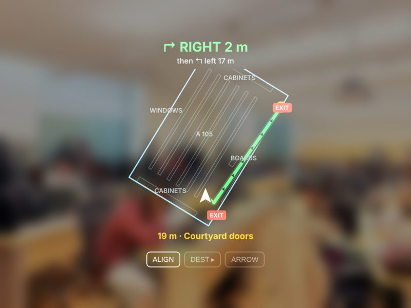
Leg 1 · at S9 A 105 south-east corner (south door) · 2 photo(s) with no match first
Fix: 0 m off, heading -2°, 39 points, confidence high, 2570 ms
Route (19 m): RIGHT 2 m → LEFT 17 m → THROUGH DOOR A 105 (NORTH), THEN SHOOT AGAIN
First move matches the true pose.
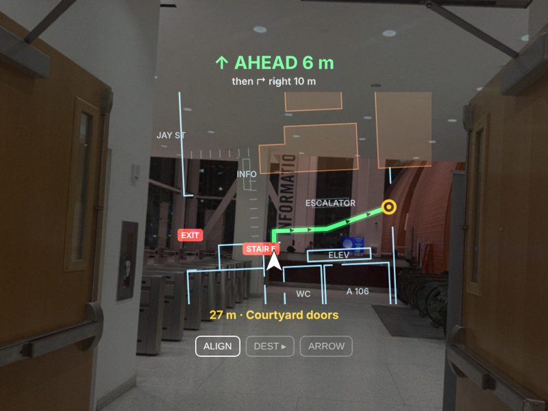
Leg 2 · at S5 Corridor outside A 105
Fix: 0 m off, heading +11°, 124 points, confidence medium, 2737 ms
Route (27 m): AHEAD 6 m → RIGHT 10 m → AHEAD 12 m
First move matches the true pose.
#22 · A 105 north-west corner (windows) → Courtyard doors PASS
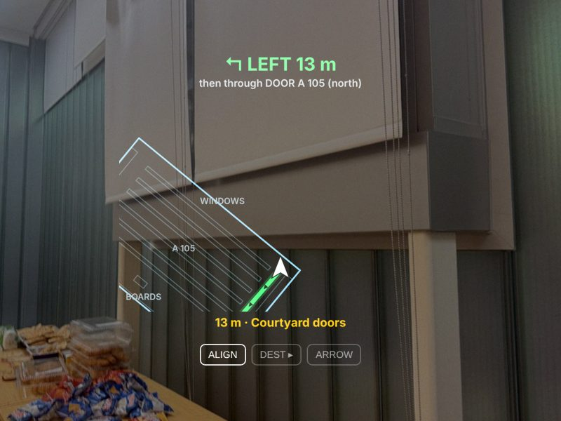
Leg 1 · at S7 A 105 north-west corner (windows)
Fix: 0 m off, heading +4°, 21 points, confidence medium, 1866 ms
Route (13 m): LEFT 13 m → THROUGH DOOR A 105 (NORTH), THEN SHOOT AGAIN
First move matches the true pose.
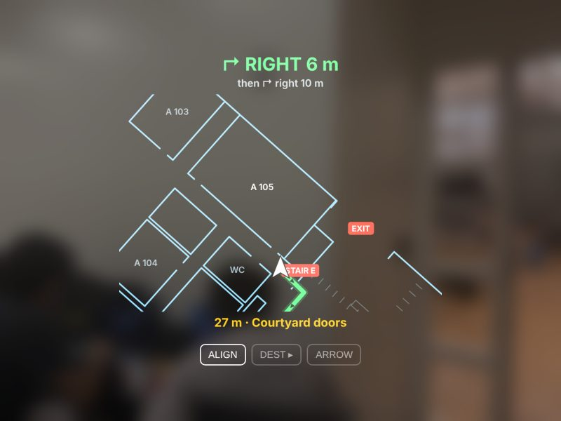
Leg 2 · at S5 Corridor outside A 105
Fix: 0 m off, heading -4°, 55 points, confidence high, 2607 ms
Route (27 m): RIGHT 6 m → RIGHT 10 m → AHEAD 12 m
First move matches the true pose.
#23 · Atrium (Jay St glass, theater shell) → Information desk PASS
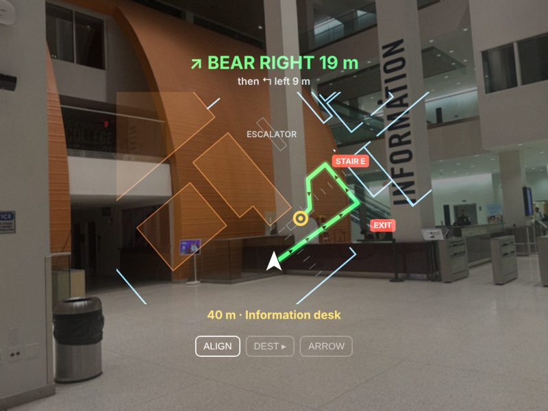
Leg 1 · at S1 Atrium (Jay St glass, theater shell)
Fix: 0 m off, heading +1°, 291 points, confidence high, 2499 ms
Route (40 m): BEAR RIGHT 19 m → LEFT 9 m → LEFT 4 m → BEAR LEFT 5 m → BEAR RIGHT 2 m
First move matches the true pose.
#24 · Behind the escalators / Elevator Bank B → Exit Stair E (by corridor doors) PASS
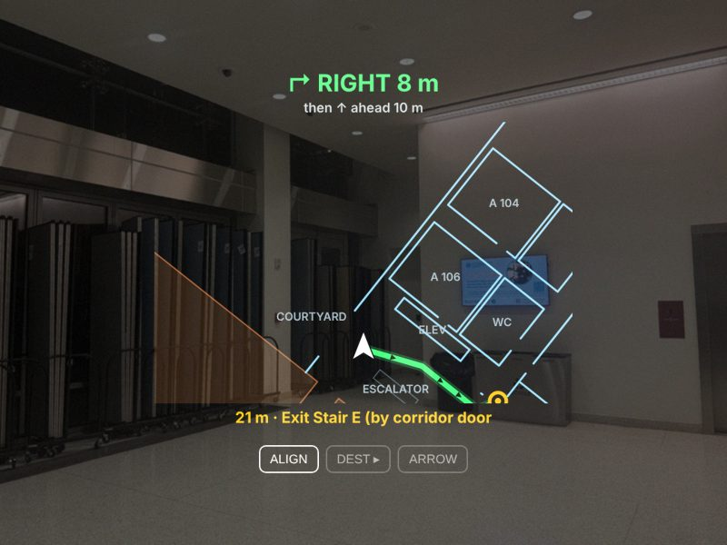
Leg 1 · at S3 Behind the escalators / Elevator Bank B
Fix: 0 m off, heading -3°, 36 points, confidence high, 1588 ms
Route (21 m): RIGHT 8 m → AHEAD 10 m → LEFT 3 m
First move matches the true pose.
#25 · A 105 south-east corner (south door) → Whiteboards (front) PASS
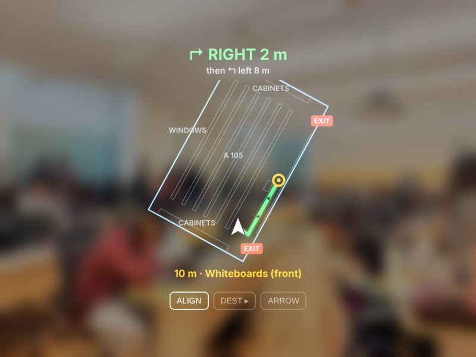
Leg 1 · at S9 A 105 south-east corner (south door) · 1 photo(s) with no match first
Fix: 0 m off, heading -4°, 56 points, confidence high, 2589 ms
Route (10 m): RIGHT 2 m → LEFT 8 m
First move matches the true pose.
#26 · A 105 south-east corner (south door) → Exit: Main Entrance (Jay St) PASS
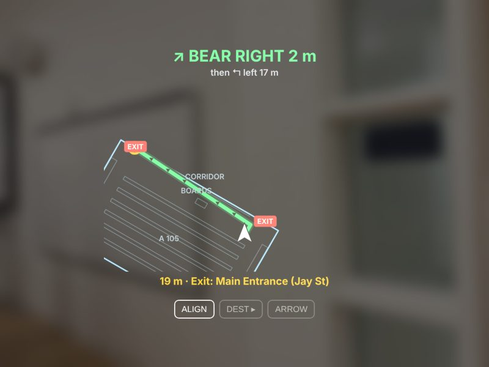
Leg 1 · at S9 A 105 south-east corner (south door)
Fix: 0 m off, heading -1°, 29 points, confidence high, 586 ms
Route (19 m): BEAR RIGHT 2 m → LEFT 17 m → THROUGH DOOR A 105 (NORTH), THEN SHOOT AGAIN
First move matches the true pose.
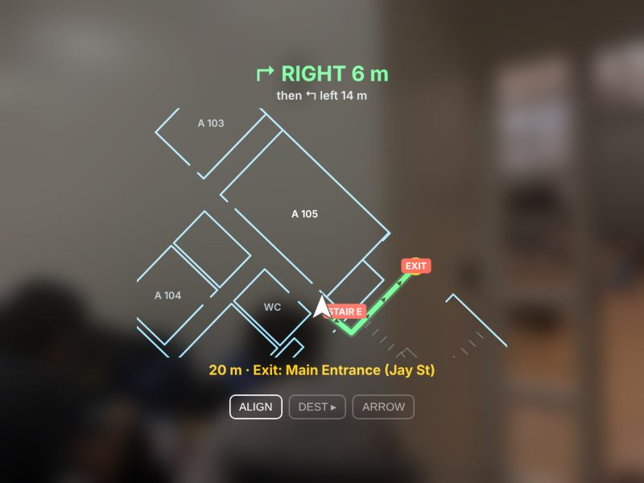
Leg 2 · at S5 Corridor outside A 105
Fix: 0 m off, heading -7°, 46 points, confidence high, 2489 ms
Route (20 m): RIGHT 6 m → LEFT 14 m
First move matches the true pose.
#27 · Corridor outside A 105 → A 106 PASS
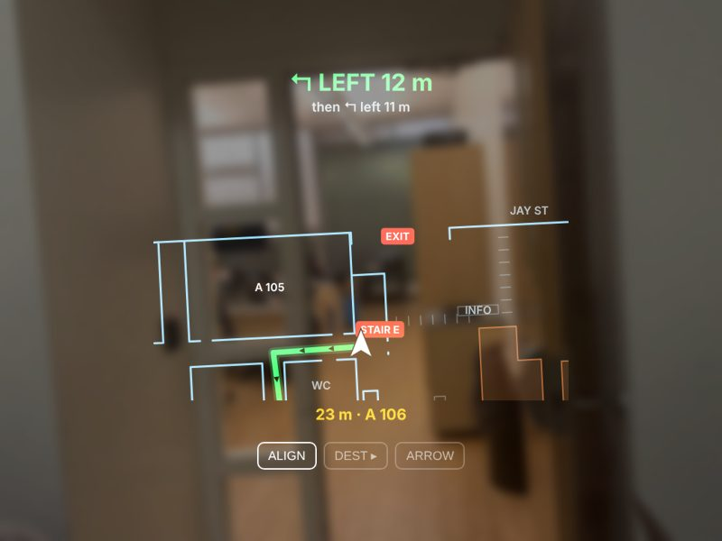
Leg 1 · at S5 Corridor outside A 105
Fix: 0 m off, heading +9°, 68 points, confidence high, 2801 ms
Route (23 m): LEFT 12 m → LEFT 11 m
First move matches the true pose.
#28 · Behind the escalators / Elevator Bank B → Exit Stair E (by corridor doors) PASS
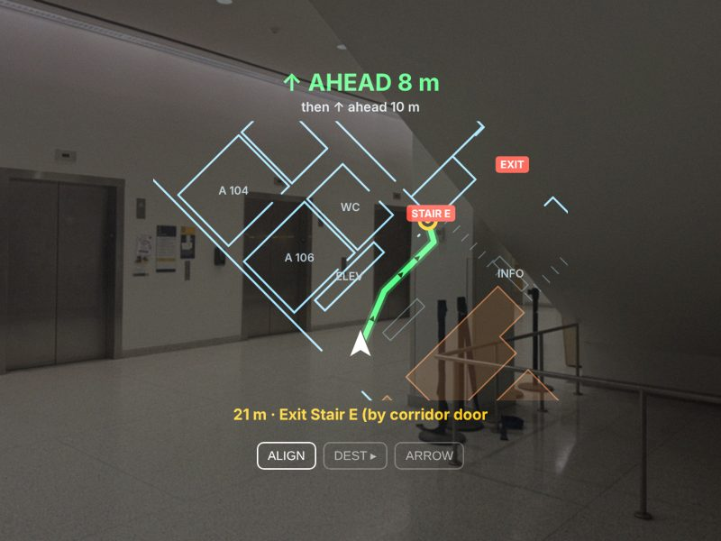
Leg 1 · at S3 Behind the escalators / Elevator Bank B
Fix: 0 m off, heading -2°, 149 points, confidence high, 2169 ms
Route (21 m): AHEAD 8 m → AHEAD 10 m → LEFT 3 m
First move matches the true pose.
#29 · A 105 south-west corner (windows) → A 103 FAIL
no match in 3 photos at S8 A 105 south-west corner (windows)
Leg 1 at S8 A 105 south-west corner (windows): no match in 3 photos.
#30 · Corridor outside A 105 → South cabinets PASS
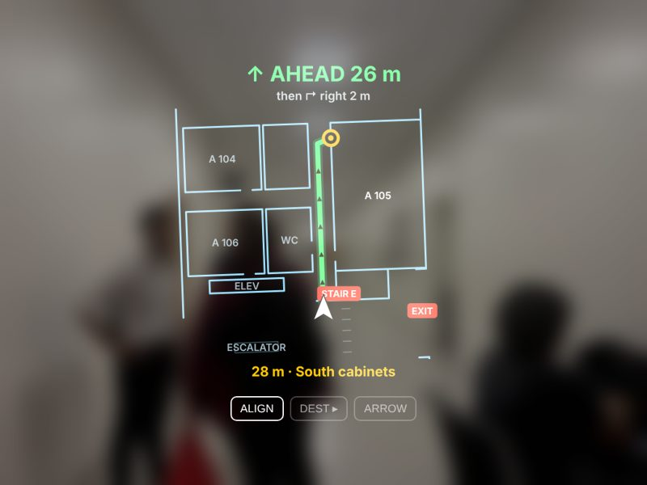
Leg 1 · at S5 Corridor outside A 105
Fix: 5 m off, heading +5°, 20 points, confidence medium, 2743 ms
Route (28 m): AHEAD 26 m → RIGHT 2 m → THROUGH DOOR A 105 (SOUTH), THEN SHOOT AGAIN
First move matches the true pose.
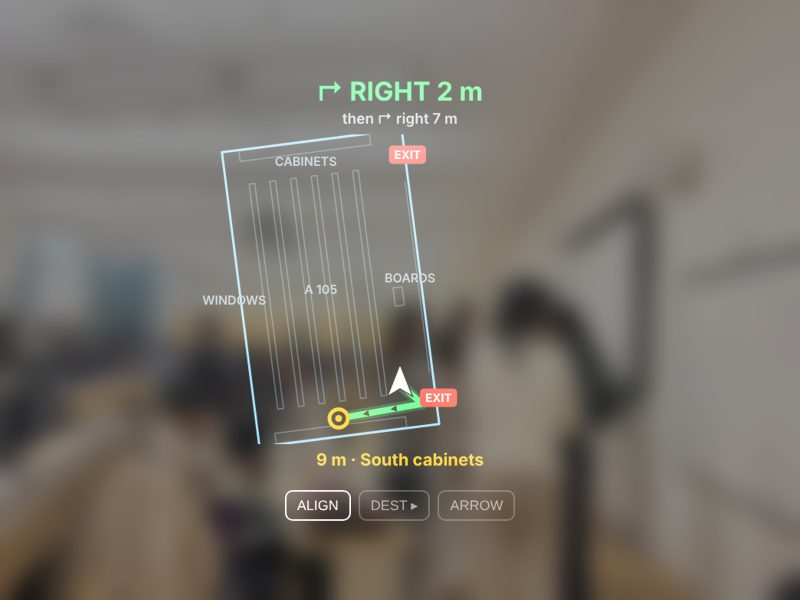
Leg 2 · at S9 A 105 south-east corner (south door) · 2 photo(s) with no match first
Fix: 0 m off, heading +0°, 39 points, confidence high, 2997 ms
Route (9 m): RIGHT 2 m → RIGHT 7 m
First move matches the true pose.
#31 · Corridor doors / Exit Stair E → Exit: Main Entrance (Jay St) PASS
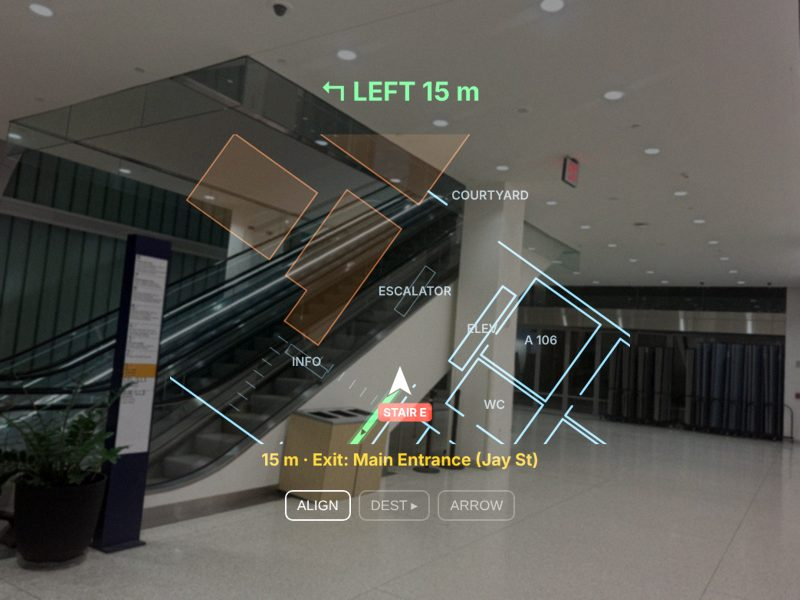
Leg 1 · at S4 Corridor doors / Exit Stair E · 1 photo(s) with no match first
Fix: 0 m off, heading +1°, 80 points, confidence high, 2676 ms
Route (15 m): LEFT 15 m
First move matches the true pose.
#32 · A 105 north-east corner (north door) → Windows (Jay St side) PASS
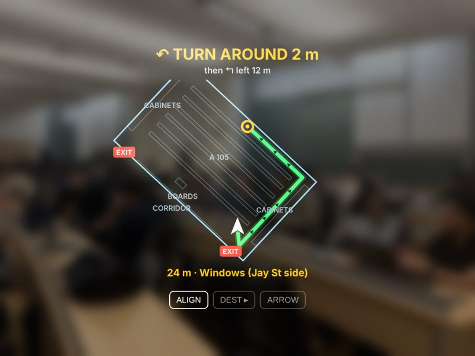
Leg 1 · at S6 A 105 north-east corner (north door)
Fix: 0 m off, heading +1°, 53 points, confidence high, 2685 ms
Route (24 m): TURN AROUND 2 m → LEFT 12 m → LEFT 10 m
First move matches the true pose.
#33 · A 105 south-west corner (windows) → Whiteboards (front) PASS
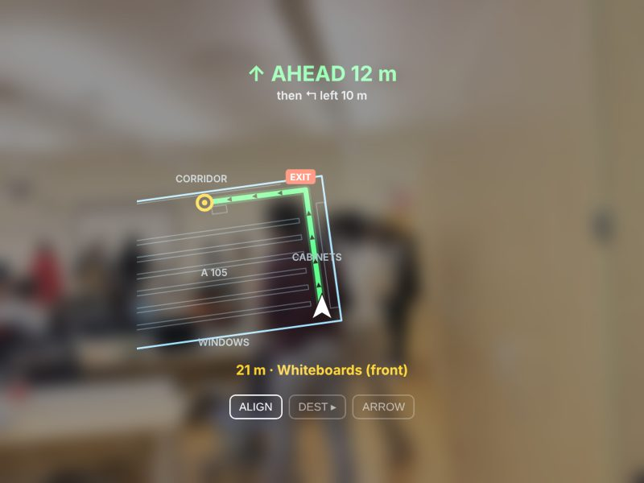
Leg 1 · at S8 A 105 south-west corner (windows)
Fix: 0 m off, heading -1°, 65 points, confidence high, 2815 ms
Route (21 m): AHEAD 12 m → LEFT 10 m
First move matches the true pose.
#34 · Atrium (Jay St glass, theater shell) → South cabinets PASS
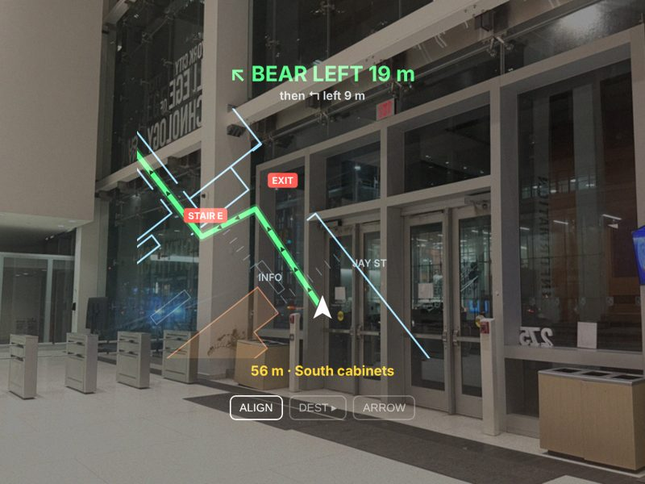
Leg 1 · at S1 Atrium (Jay St glass, theater shell)
Fix: 0 m off, heading +6°, 77 points, confidence high, 2751 ms
Route (56 m): BEAR LEFT 19 m → LEFT 9 m → RIGHT 25 m → RIGHT 2 m → THROUGH DOOR A 105 (SOUTH), THEN SHOOT AGAIN
First move matches the true pose.
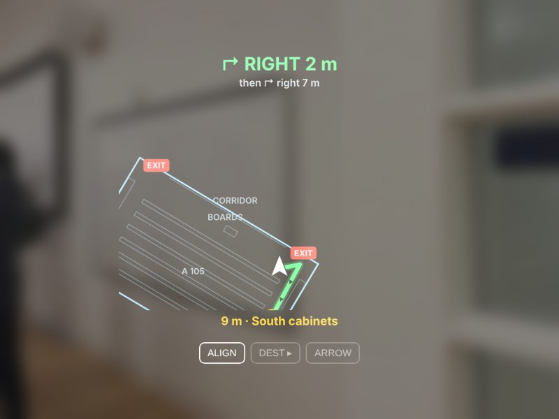
Leg 2 · at S9 A 105 south-east corner (south door)
Fix: 0 m off, heading +6°, 21 points, confidence medium, 851 ms
Route (9 m): RIGHT 2 m → RIGHT 7 m
First move matches the true pose.
#35 · Atrium (Jay St glass, theater shell) → Theater (orchestra) PASS
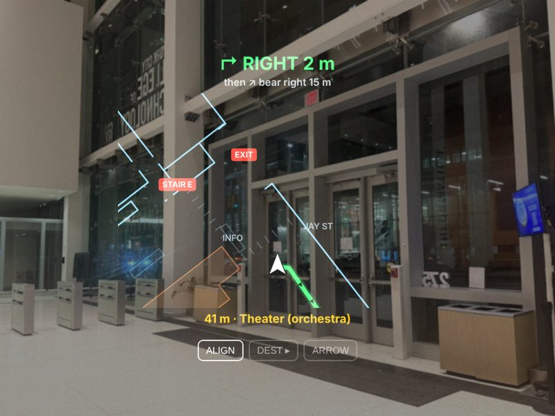
Leg 1 · at S1 Atrium (Jay St glass, theater shell)
Fix: 0 m off, heading +3°, 76 points, confidence high, 2689 ms
Route (41 m): RIGHT 2 m → BEAR RIGHT 15 m → RIGHT 24 m
First move matches the true pose.
#36 · Atrium (Jay St glass, theater shell) → Exit Stair E (by corridor doors) PASS
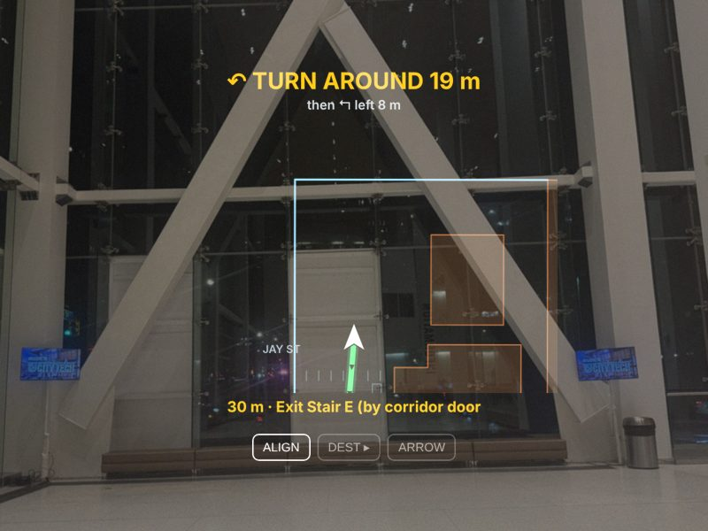
Leg 1 · at S1 Atrium (Jay St glass, theater shell)
Fix: 0 m off, heading -3°, 99 points, confidence high, 2538 ms
Route (30 m): TURN AROUND 19 m → LEFT 8 m → RIGHT 3 m
First move matches the true pose.
#37 · A 105 north-west corner (windows) → A 106 FAIL
wrong fix at S7 A 105 north-west corner (windows) (0 m, -37 deg)
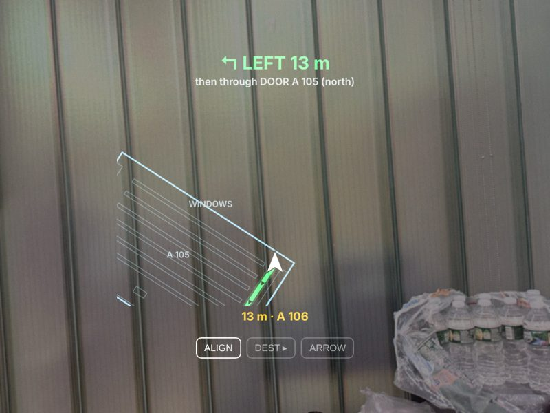
Leg 1 · at S7 A 105 north-west corner (windows)
Fix: 0 m off, heading -37°, 21 points, confidence medium, 2037 ms
Route (13 m): LEFT 13 m → THROUGH DOOR A 105 (NORTH), THEN SHOOT AGAIN
First move: LEFT. From the true pose it would be: TURN AROUND.
#38 · A 105 north-west corner (windows) → Theater (orchestra) PASS
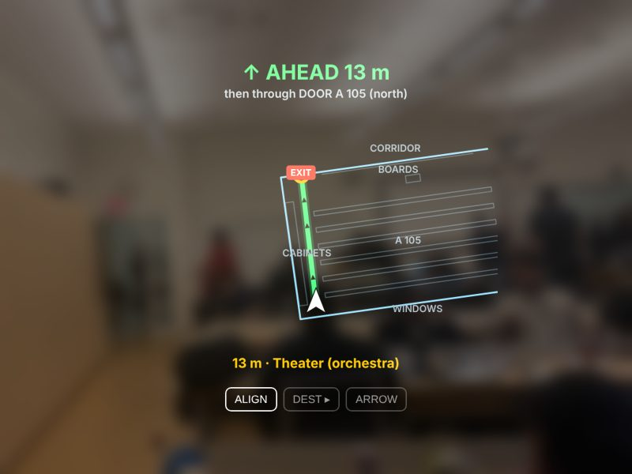
Leg 1 · at S7 A 105 north-west corner (windows)
Fix: 0 m off, heading -17°, 14 points, confidence medium, 2641 ms
Route (13 m): AHEAD 13 m → THROUGH DOOR A 105 (NORTH), THEN SHOOT AGAIN
First move matches the true pose.
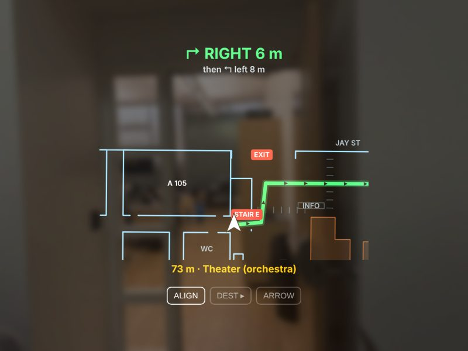
Leg 2 · at S5 Corridor outside A 105
Fix: 0 m off, heading +1°, 77 points, confidence high, 2491 ms
Route (73 m): RIGHT 6 m → LEFT 8 m → RIGHT 34 m → RIGHT 25 m
First move matches the true pose.
#39 · Corridor doors / Exit Stair E → Exit: Main Entrance (Jay St) PASS
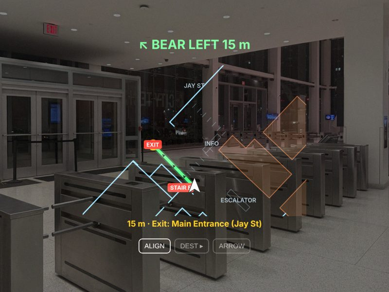
Leg 1 · at S4 Corridor doors / Exit Stair E
Fix: 0 m off, heading -6°, 129 points, confidence high, 2729 ms
Route (15 m): BEAR LEFT 15 m
First move matches the true pose.
#40 · A 105 north-east corner (north door) → Courtyard doors REACHED, a first move was off
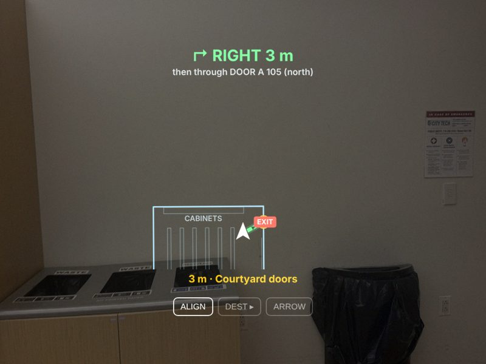
Leg 1 · at S6 A 105 north-east corner (north door)
Fix: 0 m off, heading -2°, 27 points, confidence high, 1177 ms
Route (3 m): RIGHT 3 m → THROUGH DOOR A 105 (NORTH), THEN SHOOT AGAIN
First move: RIGHT. From the true pose it would be: BEAR RIGHT.
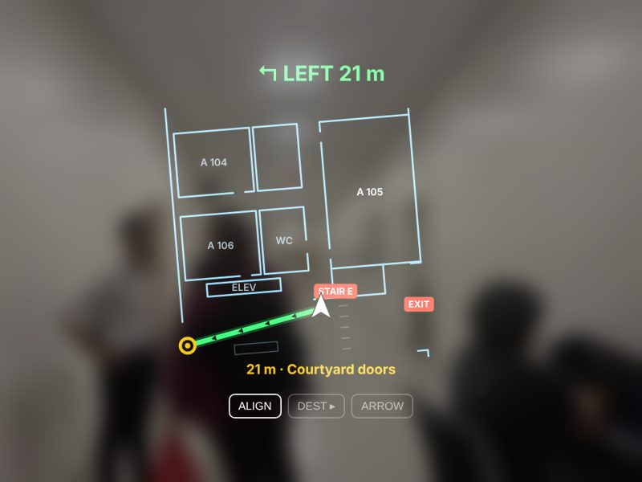
Leg 2 · at S5 Corridor outside A 105
Fix: 5 m off, heading +5°, 25 points, confidence high, 2468 ms
Route (21 m): LEFT 21 m
First move: LEFT. From the true pose it would be: TURN AROUND.
#41 · Behind the escalators / Elevator Bank B → Escalator to 2nd floor PASS
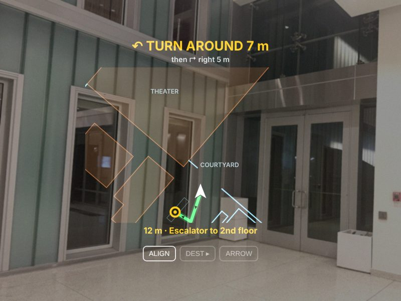
Leg 1 · at S3 Behind the escalators / Elevator Bank B · 1 photo(s) with no match first
Fix: 0 m off, heading +10°, 61 points, confidence high, 2122 ms
Route (12 m): TURN AROUND 7 m → RIGHT 5 m
First move matches the true pose.
#42 · A 105 north-east corner (north door) → South cabinets PASS
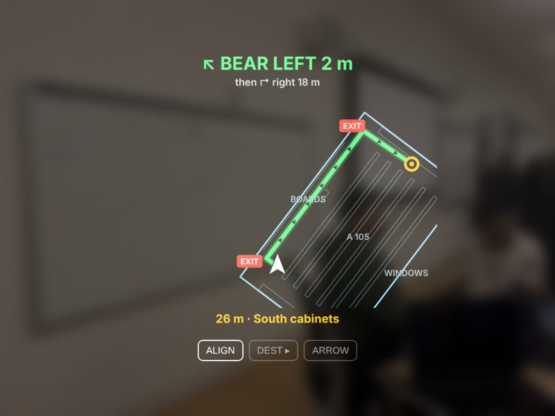
Leg 1 · at S6 A 105 north-east corner (north door)
Fix: 0 m off, heading +9°, 21 points, confidence medium, 2093 ms
Route (26 m): BEAR LEFT 2 m → RIGHT 18 m → RIGHT 7 m
First move matches the true pose.
#43 · A 105 south-east corner (south door) → Exit Stair E (by corridor doors) PASS
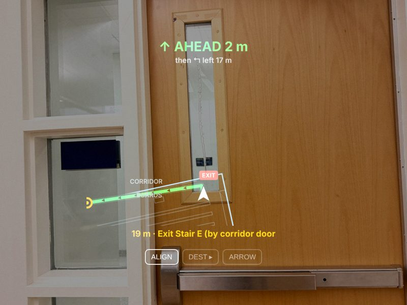
Leg 1 · at S9 A 105 south-east corner (south door)
Fix: 0 m off, heading -0°, 25 points, confidence high, 1132 ms
Route (19 m): AHEAD 2 m → LEFT 17 m → THROUGH DOOR A 105 (NORTH), THEN SHOOT AGAIN
First move matches the true pose.
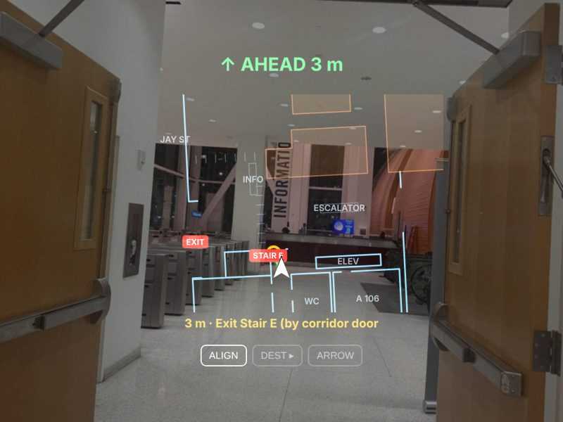
Leg 2 · at S5 Corridor outside A 105
Fix: 0 m off, heading +10°, 146 points, confidence medium, 2860 ms
Route (3 m): AHEAD 3 m
First move matches the true pose.
#44 · A 105 north-east corner (north door) → Elevator Bank B PASS
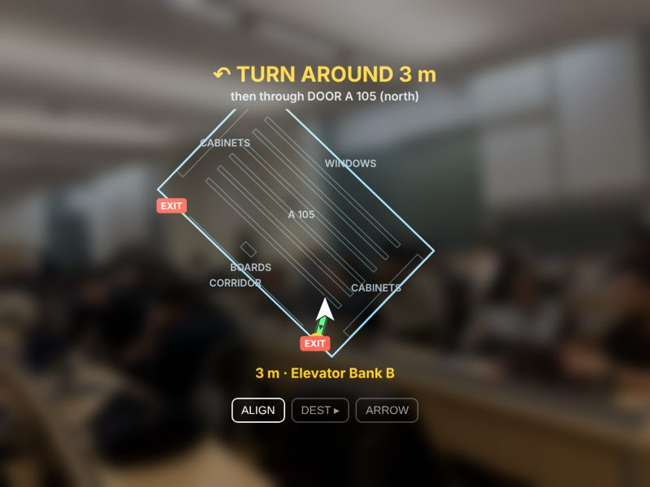
Leg 1 · at S6 A 105 north-east corner (north door)
Fix: 0 m off, heading +0°, 48 points, confidence high, 2862 ms
Route (3 m): TURN AROUND 3 m → THROUGH DOOR A 105 (NORTH), THEN SHOOT AGAIN
First move matches the true pose.
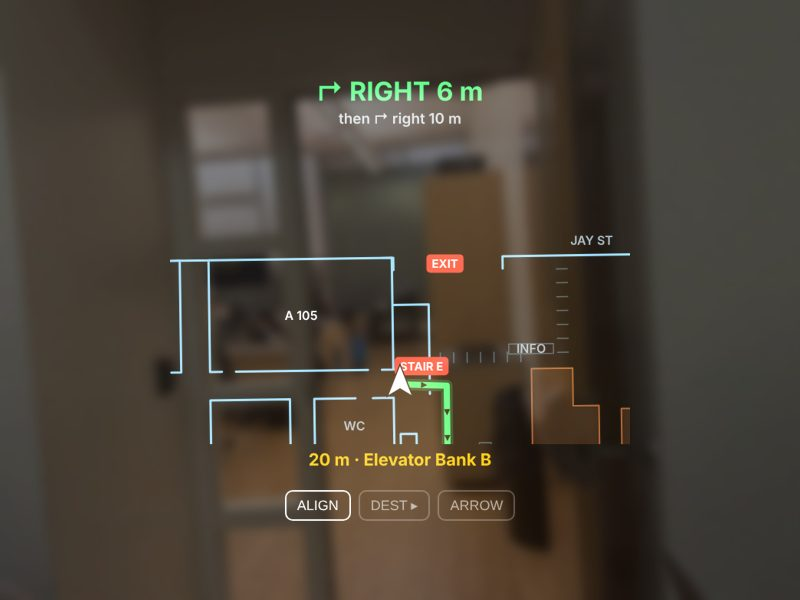
Leg 2 · at S5 Corridor outside A 105
Fix: 0 m off, heading +4°, 83 points, confidence high, 2437 ms
Route (20 m): RIGHT 6 m → RIGHT 10 m → RIGHT 5 m
First move matches the true pose.
#45 · A 105 north-east corner (north door) → A 103 REACHED, a first move was off
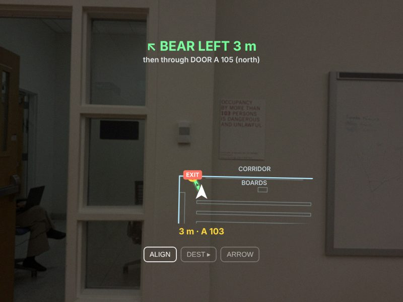
Leg 1 · at S6 A 105 north-east corner (north door) · 2 photo(s) with no match first
Fix: 0 m off, heading +3°, 49 points, confidence high, 628 ms
Route (3 m): BEAR LEFT 3 m → THROUGH DOOR A 105 (NORTH), THEN SHOOT AGAIN
First move: BEAR LEFT. From the true pose it would be: AHEAD.
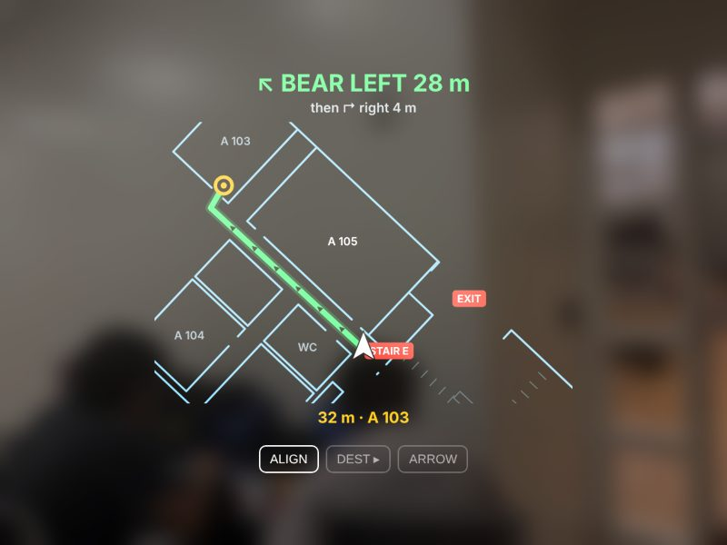
Leg 2 · at S5 Corridor outside A 105 · 1 photo(s) with no match first
Fix: 0 m off, heading -0°, 60 points, confidence high, 2190 ms
Route (32 m): BEAR LEFT 28 m → RIGHT 4 m
First move matches the true pose.
#46 · A 105 south-west corner (windows) → Whiteboards (front) PASS
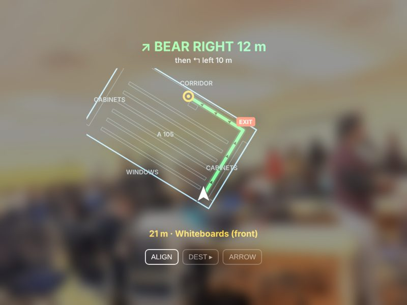
Leg 1 · at S8 A 105 south-west corner (windows) · 1 photo(s) with no match first
Fix: 0 m off, heading +3°, 122 points, confidence high, 2915 ms
Route (21 m): BEAR RIGHT 12 m → LEFT 10 m
First move matches the true pose.
#47 · Atrium (Jay St glass, theater shell) → Elevator Bank B PASS
Leg 1 · at S1 Atrium (Jay St glass, theater shell)
Fix: 0 m off, heading -1°, 88 points, confidence high, 2262 ms
Route (42 m): TURN AROUND 19 m → LEFT 19 m → RIGHT 5 m
First move matches the true pose.
#48 · A 105 north-east corner (north door) → NEAREST EXIT PASS
Leg 1 · at S6 A 105 north-east corner (north door)
Fix: 0 m off, heading -3°, 38 points, confidence high, 3014 ms
Route (3 m): TURN AROUND 3 m → THROUGH DOOR A 105 (NORTH), THEN SHOOT AGAIN
First move matches the true pose.
Leg 2 · at S5 Corridor outside A 105
Fix: 0 m off, heading +0°, 75 points, confidence high, 2445 ms
Route (3 m): RIGHT 3 m
First move matches the true pose.
#49 · Corridor doors / Exit Stair E → Windows (Jay St side) PASS
Leg 1 · at S4 Corridor doors / Exit Stair E
Fix: 5 m off, heading -5°, 36 points, confidence high, 2850 ms
Route (5 m): AHEAD 3 m → RIGHT 2 m → THROUGH DOOR A 105 (NORTH), THEN SHOOT AGAIN
First move matches the true pose.
Leg 2 · at S6 A 105 north-east corner (north door) · 1 photo(s) with no match first
Fix: 0 m off, heading -2°, 127 points, confidence high, 1789 ms
Route (24 m): AHEAD 2 m → LEFT 12 m → LEFT 10 m
First move matches the true pose.
#50 · Corridor doors / Exit Stair E → Information desk PASS
Leg 1 · at S4 Corridor doors / Exit Stair E
Fix: 0 m off, heading +4°, 140 points, confidence high, 2868 ms
Route (13 m): AHEAD 5 m → BEAR LEFT 5 m → BEAR RIGHT 2 m
First move matches the true pose.